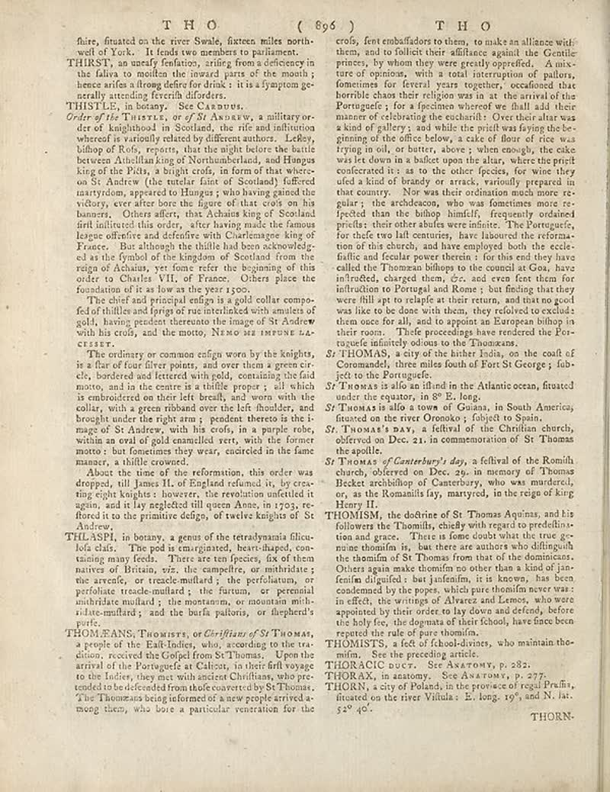

page-1614-ea352b487d65.jpg

Page ID: britannica:309f765b1ecc83e0a7f7762e44b4a927a7555443:train:1614
Running head: T H O ( 896 )
Image SHA-256: ea352b487d650c713a3e6bdd8e4bc1ded85e0d7558c3fa1d9cdbce89abc38ca3

(untitled) [?]
T HO hire, situated on the river Swade, fixtures miles north- of Yor. It leads two members in parlament
THIRSTI [Text]
THIRSTI, an overall definition, parlament a deficiency in the false to moetles the inward parts of the mouth; hence arise after Hong before for think : it is a lymptom generally attending benefit afforded.
THISTLE [Text]
THISTLE, in botany. See Carousus. _Order of Life_ THISTES, or of BX Anakaw, a military order of neighborhood in Scotland, the rife and infiltration whereof is variously related by different authors. Leley, bilbp of Roofs, reports, that the girls below the battle between Chichling king of Northumberland, and Humpes king of the Pilots, a bright crois, in form of that whercen on St Andrew (the under false is Scotland) fafferent majority appears to the Hunges; who being grand the victory, ever after bore the figure of that crois on his baners. Others affer, that Auchana King of Scotland ifn influenced the orders, after having any of the famous league offensive and defensive with Charlemagae king of France. But although he still had been acknowledged as the Jhnol of the kingdom of Sozbank from the reign of Achaiu, yet fome refer the beginning of this order to Charles VII, of France. Others place the foundation of as far as the year z too. The chief and principal edge is a gold collar compo- feel fullfills and griping of me indicated with amules of golf, having freedom thereto the image of St Andrew with his crois, and the motto, NMO THE IMPUNE LA CITY. The ordinary or common origin worn by the knights, is a flat of four River points, and over them a green circled, borders and offered through pink, containing the find motto, and in the camera is a thilfe proper, all which is embroidered on their left breastf, and womb with the collay, with a great method over the shoulder, and brought under the right arm i pender thereto is the iimage of St Andrew, with his crois, in a purple robe, within an oral of gold canamelled very, with the former motto - but femonettes they were, existed in the June manner, a hittle crowned. Also, the time of the reformation, this order was dropped, till James II: of England refumed it, by creating eight knights I however, the resolution unifedit is again, and are why neglected the mena Anne, no 2023, reduced to the primitive delges of twelve knights of St Andrews.
Matched article: Thistle (Wikipedia, revision 1351365908, re-rank score -3.8671875) · comparison
THILSPH [Text]
THILSPH, in botany, a genus of the térdrynania filicul lofa clais. The pod is emarginated, heart-shaped, containing many feeds. There are ten species, for of them native of Britain, etc. the compoffre, or mihrskate; the arveffe, or treated-mullard is the perfeitaum, or perisholate treated-muillard, the fratum, or perennial multithread-muillard; the monuments, or nonnumeral nulliridate-muillard; and the burfa palforta, or thepherd's ports.
THONF [Text]
THONF.ANS, ThOMSTS, or Chiffistur of St Thomas, a people of the Ealt-Infer, who, according to the tradious received the Gorgeel for St Thomas. Upon the arrival of the Portuguese at Calising, in her first marriage to the Indier, they met with ancient Chiffans, who pre tended to be defended from shale covered by StThomas. "The Thomas’s being informed is a new people arrived a momg them, who bore a particular veneration for the crois, fet entheaffors to them, to make an alliance with them, and to fulfill their affiliates against the Granite prince, by whom they were greatly profitable. A mixture of opinions, with a total interruption of pallors, femonsines for travel years together, occasional that horrible chain that religion was in at the interval of the Portuguese; for a specimen whereof we shall add their names of celebration the exclusion. Over their altar was a kind of gallery, and while the pristine living being beginning of the office below, a cake of floor of rice was trying to oil, or butter, above , when enough, the cake was let down in a bullet upon the slary, where target conferred it: as to the other few pieces, for wine they died a kind of body or struck, various prepared in that country. Now their ordination much more regular; the archdeacon, who was fomentes more repled than the baby handful, frequently obtained prices their other album went enntric. The Portuguese, for thefe two latl centuries, have laboured the reforma tion of the church, and have employed both the ecolela fific and leaching them better; for this end they have called the Thomas bibops to the council at Goa, have inherited, charged them, for even for them for induction on Portugal and Rome? He finding that they were fill apt to relale at their return, and that no good was like to be done with them, they refused to exclude them once for all, and, and to spoon in European bibings in their room. These proceedings have rendered the Portuguese familyely close to the Thomas. St THOMAS, a city of the father India, on the coaft of Commodeld, three miles south of Port St George; fub ject to the Portuguese. St Thomas is also an illand in the Atlantic ocean, fituated under the equator, in 8°E. long. St Thomas is all a town of Guiana, in South America, flattened on the river Oromoky, foljetoft Spain. St. Thomas’s Day, a felfval of the Christian church, offered on Dec. 21, in commemoration of St Thomas the profile. St Thomas y of Cantesterpil, by a feffral of the Domlin, church, observed on Dec. 22, in memory of Thomas Becker archbishop of Canteterboy, who was murdered, or, as the Romanilla fay, martyred, in the reign of king Henry II.
Matched article: Thomas of Cana (Wikipedia, revision 1341416593, re-rank score -4.40234375) · comparison
THOMISM [Text]
THOMISM, the doctrine of St Thomas Aquinat, and his followers the Thomas, clearly with regard to predellination and grace. There is some doubts what the true ge mine thomlim is, but there are authors who diflingwith the thomall of St Thomas from that of the dominicians. Other agents make themomin so more than a kind of inni-fenim olugted: bat janfenim, it is known, has been condemned by the repys, which give thomlim never was: in effect, the writings of diverse Lesencés, who were appointed by their order to lay down and defend, before the baby five, the depunts of their School, have face been reported the role of pure thomlim.
THOMISTS [Text]
THOMISTS, a feet of school-driven, who maintain thom- in, and the preceding article. THEORACIC Dc ctr. See Astronomy, p. 282.
THORAX [Text]
THORAX, in anatomy. See Anatomy, p. 277.
Matched article: Thorax (Wikipedia, revision 1348986839, re-rank score 2.880859375) · comparison
THONN [Text]
THONN. a city of Poland, in the province of regal Praflix, illustrated on the river Villula e. E. long. 19", and N. lat.